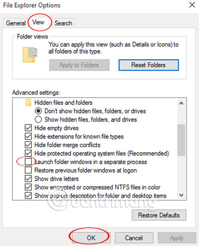

Giai phong RAM de may chay nhanh
Máy vi tính thời nay cần nhiều RAM để có thể hoạt động hiệu quả hơn, đặc biệt là nếu nó đang chạy Windows Vista 32-bit.
Mọt hê thống với 2GB bộ nhớ RAM vẫn có thể chạy ì ạch nếu nó được cấu hình không tốt và bạn phải nâng cấp lên 4GB RAM để rồi phát hiện ra PC của mình chỉ có thể truy cập khoảng 3GB. Vậy dung lượng RAM đã đi đâu, và có cách nào giúp bạn có thể lấy lại không? Cài đặt Windows Vista 64-bit có thể tạo nên sự khác biệt thực sự nếu như phần cứng của bạn đủ đáp ứng. Nhưng nếu điều đó quá tầm với bạn thì vẫn còn có cách khác để khắc phục. Sau đây là những điều bạn cần biết.
- Kiểm soát những chương trình lúc khởi dộng:
- Vô hiệu hóa những dịch vụ không mong muốn:
Con đường dẫn tới nhứng việc làm chủ bộ nhớ máy tính bắt đầu bằng việc nắm quyền kiểm soát nhiều hơn đối với những chương trình bạn đang chạy
Vào Start > All Programs và gỡ bỏ bất kỳ phần mềm nào bạn không sử dụng, sau đó khởi chạy MSCONFIG.EXE và nhấp vào startup để xem nhúng gì được cấu hình khởi động cùng Windows. Nếu bạn thấy những chương trình không cần thiết, bạn có thể gỡ bỏ hoặc thay đổi các thiết lập của nó để chương trình ấy không tự động khởi dộng khi bạn đăng nhập vào Windows.
Ứng dụng Add-ons cho các trình duyệt, Microsoft Office và những thứ tương tự cũng có thể tiêu thụ lượng RAM lớn đến không ngờ. Kiểm tra các add-ons trên trình duyệt hiện tại của bạn (vào Tools> Manage Add-ons trong IE, Tools> Add-ons trong Firefox) và vô hiệu hóa (hoặc gỡ bỏ cài đặt) bất kỳ cái nào mầ bạn không sử dụng đến.
Để tăng tốc cho Windows một số người khuyên bạn nên vô hiệu hóa dịch vụ Windows không càn thiết. Nhưng trong hầu hết các trường hợp thì cách này không hiệu quả lắm, ngoại trừ Windows Defender, nó chiếm khoảng 20MB (hoặc nhiều hơn nếu bạn để nó chạy nền). Nếu bạn đã có một công cụ Antispyware hoặc Antivirus khác thì nên tắt Defender (trong Vista, chạy Windows Defender, nháp chuột vào Tools> Options, cuộn xuống và bỏ chọn 'Use Windows Defender')